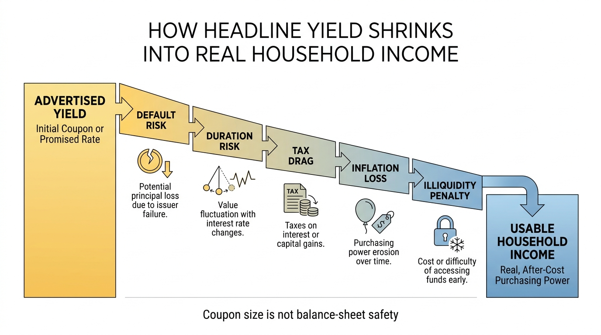
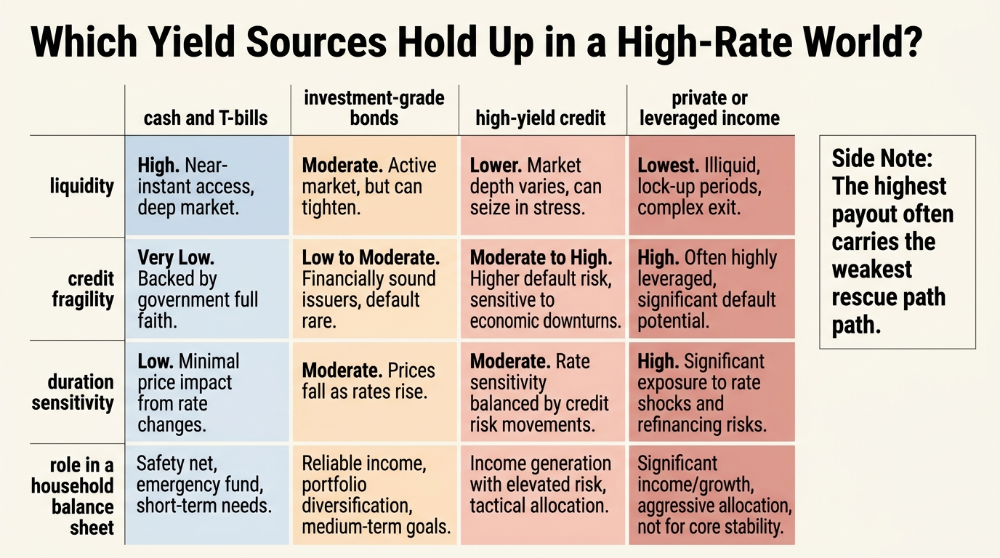

The Yield Trap in a High-Rate World
Higher rates create a tempting story. Cash pays again. Bond coupons look respectable. Private credit promises double-digit distributions. Household investors who felt starved for income during the zero-rate decade suddenly see a menu full of yield. The trap is that headline yield and usable household resilience are not the same thing.
Established fact comes first. Yield is a price for taking some combination of duration risk, credit risk, liquidity risk, call risk, tax drag, and inflation uncertainty. A higher advertised yield does not remove those exposures. It usually means one of them is being compensated more heavily, or at least marketed more aggressively.
That matters more in a high-rate regime because households start treating income products as a solution to rising living costs, retirement anxiety, or equity volatility. Once yield becomes the only target, investors stop asking the harder question: what exactly is producing this payout, and what happens if the rate path, credit cycle, or refinancing channel turns against it?

Why Headline Yield Misleads
The first distortion is credit quality. When rates rise, many investors assume they can earn more income without taking meaningfully more risk. That is true for short-duration Treasuries or insured cash only up to a point. Once the product moves into lower-quality credit, leveraged income funds, business development companies, mortgage vehicles, or opaque private lending pools, the extra yield is usually payment for fragility that appears only later.
The second distortion is duration. A larger coupon does not protect a long-duration asset from mark-to-market pain if rates reprice again or if the investor needs liquidity before maturity. Households that tell themselves they are income investors often rediscover that they are still balance-sheet investors the moment an unexpected expense forces a sale.
The third distortion is taxation. A 7 percent nominal payout and a 7 percent after-tax, after-inflation, after-fee result are different worlds. The higher the marginal tax rate and the less shelter available, the less impressive many yield products look once converted into real retention.
Established: yield is never free. It is compensation for some mix of time, risk, and structural complexity.
Inference: the higher-rate regime makes investors more likely to overpay for the feeling of income stability, even when total balance-sheet resilience is deteriorating.
Where the Trap Usually Hides
The yield trap tends to cluster in products that advertise income while muting the mechanism. High-yield bond funds can look calm until defaults rise or spreads widen. Preferred shares can behave like long-duration instruments with equity-like downside at the wrong moment. Mortgage REITs can offer large distributions while carrying financing sensitivity and book-value instability. Private credit can appear smooth precisely because marks move slowly, not because risk vanished.
This is why The Opportunity Cost of Cash, The Cost-of-Capital Trap, and The Private Markets Mirage belong in the same conversation. Cash can be wasteful when held with no purpose. Cheap capital can distort decision-making. Private assets can hide volatility rather than eliminate it. A high-rate world does not cancel those problems. It changes their packaging.

A Better Way to Read Income Products
The practical framework is to sort yield into three buckets. Reserve yield is cash-like capital that exists to survive timing shocks. Contractual yield is generated by assets whose payment stream is reasonably transparent, but still subject to duration and reinvestment math. Risk yield is everything that pays more because another party is transferring real fragility to the holder.
Households get in trouble when they use risk yield to fund reserve needs. That mistake turns a portfolio decision into a solvency decision. If the capital has to work during a drawdown, job loss, refinancing squeeze, or medical event, then liquidity and principal stability matter more than the coupon headline.
| Yield Source | Why It Looks Attractive | What Usually Gets Underpriced |
|---|---|---|
| Short-duration sovereign or insured cash | Simple, liquid, visible income | Reinvestment risk if rates fall |
| Investment-grade bonds | Moderate income with stronger credit profile | Duration and rate sensitivity |
| High-yield credit | Coupon appears materially better | Default clustering and spread widening |
| Private credit or opaque income vehicles | Smooth marks and high distributions | Illiquidity, delayed repricing, covenant weakness |
| Leveraged yield wrappers | Enhanced cash payout | Financing stress, forced deleveraging, path dependency |
The Household Decision Rule
A durable household plan separates spending capital from return-seeking capital. Money needed for near-term obligations should be judged by liquidity, tax clarity, and downside containment first. Capital meant to compound across a longer horizon can take more duration or credit exposure, but only after the reserve layer is secure.
That sounds obvious, yet the yield trap begins when investors let the current income line dictate the entire asset choice. A household that stretches for two extra points of yield but sacrifices access, principal stability, or tax efficiency may end up poorer precisely because the yield looked generous.
The right question is not, What pays the most today? The right question is, What form of income fits the role this capital actually serves? High rates make that discipline more rewarding, but they also punish sloppiness faster.
What Is Known, Inferred, and Still Unknown
Known: higher payout assets embed higher exposure somewhere. Known: household balance sheets fail more often through liquidity and sequence stress than through spreadsheet yield shortages alone. Known: taxes and inflation can materially narrow the real value of nominal income.
Inferred: the high-rate environment will continue to create strong demand for products that look safe because they distribute cash regularly. Inferred: many households will misread those products as substitutes for true reserves or for diversified long-run compounding capital.
Unknown: how long the current yield hierarchy will persist across cash, sovereign debt, corporate credit, and private yield products. Unknown: where the next refinancing or default pressure point will emerge. Those are timing questions. The structural rule is steadier: income is useful only if the balance sheet can survive the way it was generated.
Sources and Evidence Frame
Established claims here draw on standard fixed-income and household finance logic: yield as compensation for risk, duration-driven price sensitivity, credit spread behavior, tax drag, and the role of liquidity in real-world portfolio durability.
Interpretive claims focus on household behavior. The central inference is that high-rate regimes change the marketing surface of yield more than they change the underlying requirement to price credit, duration, and liquidity honestly.